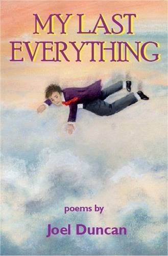

About
Joel Duncan is a poet from Greetland, near Halifax in West Yorkshire.
In 2014 he was named Calderdale’s first Young Poet Laureate. In the role he worked alongside the borough’s Poet Laureate, Gez Walsh, visiting schools and libraries to encourage others to read and write poetry.
His first collection, My Last Everything, was published by The King’s England Press in 2015. After the Boxing Day floods of 2015, he and Gez Walsh co-edited Floods of Tears and Laughter, a book of children’s poems and writing sold to raise money for the Calderdale Flood Relief Appeal.
He has talked about his poetry on radio and in the local press. His second collection, Beauty Is a Timid Beast, is in the works.
Books

My Last Everything
- Poems
- The King’s England Press, October 2015
- Paperback, 72 pages
- ISBN 9781909548534
Beauty Is a Timid Beast
Second collection, in the works.
In the press
- 2014First ever young poet laureate of Calderdale is announced to celebrate National Poetry DayHuddersfield Examiner, 15 October 2014
- 2015Poetry in motion at new library siteCalderdale Council News, 3 February 2015
- 2016Poets Gez Walsh and Joel Duncan to aid flood victims in CalderdaleHuddersfield Examiner, 5 February 2016